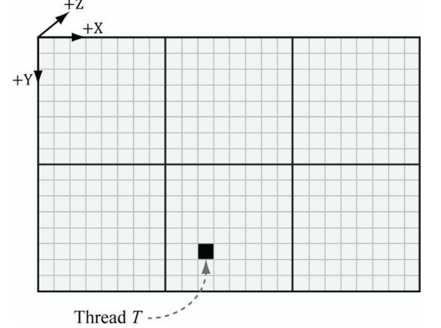
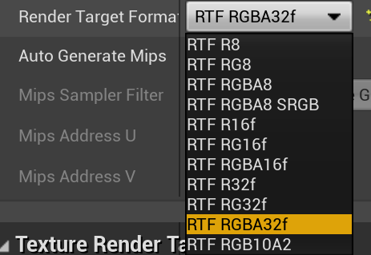
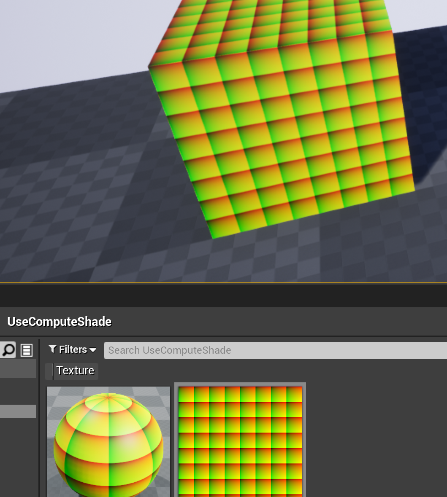

Ue4 Compute Shader
UE4版本:4.26.2
前置知识
- DirectX中的Compute Shader, UAV(Unordered Access View)
- 推荐阅读《Introduction to 3D Game Programming with DirectX 11》的 Chapter12-The Compute Shader
工程源码
测试场景: Levels/ComputeShader
知识点
UAV和SRV
ref SRV 和 UAV 都是Shader可访问的资源，不同之处在于 SRV：只读，可用于任意类型Shader. UAV：可读写，可用于 Pixel Shader，Compute Shader
UAV的用法流程范例
前提：为某个资源创建UAV，SRV。
- 范例1：将UAV绑定到Compute Shader，先读再写
- 范例2：将UAV绑定到Compute Shader，写入内容，然后将SRV绑定到Pixel Shader，利用SRV数据进行绘制
一、The Compute Shader要点回顾
1.1 适用情形
Compute Shader适用于大量没有顺序要求的并行计算，可以用于非图形相关的运算(GPGPU)，也可以用于图形渲染相关的计算。它的优势在于“并行”，对于没有顺序要求和顺序依赖的运算处理速度一般要比CPU快很多。
1.2 数据传输速度瓶颈
CPU和GPU之间的数据传输相对于GPU和显存之间的数据传输速度要慢很多，因此除非必要，在ComputeShader计算出来的数据避免向CPU传递。
1.3 数据输入和输出(UAV)
我们向Shader(包括Compute Shader)输入数据的方式有Buffer和Texture，使用Texture输入数据时，我们需要为Texture创建一个ShaderResourceView，这在之前的篇章里我们已经实践过了。注意ShaderResourceView在Shader中是只读的。
在ComputeShader中，有个特殊的地方，我们可以使用RWTexture2D类型的参数
RWTexture2D<float4> gOutput;
在ComputeShader中，可以对RWTexture2D类型的参数进行读和写(正如RW所暗示的那样)
对RWTexture2D绑定输出时，我们需要用到另外一种特殊的视图UAV(Unordered Access View)，通常我们需要对一张贴图同时绑定两个视图，SRV和UAV，以便在ComputeShader中先读取(SRV)它，然后再写入它(UAV)。但这不是强制的，我们也可以只写不读(用算法生成每个像素的值)，本篇后面的实例正是这种情况。
1.4 线程和线程组
GPU编程中，线程被分为多个线程组(Thread Group),每个线程组运行在一个SM(Streaming Multiprocessor，即GPU的“大核”)上。所以如果GPU有16个SM，最好把任务分割成16个以上的部分，以便充分利用多核心并行执行的优势。当然，如果能分割成32个或更多的部分更好，这样避免因其中一个任务阻塞而导致该SM也被阻塞。每个SM分配到更多的任务可以让核心在遇到任务阻塞时切换到其他任务，从而发挥更好的效用。
每个线程组共享一块显存，线程组之间互相不可以访问显存。线程组内可以实现线程任务同步，但是不同线程组之间的执行顺序是无序的。
一个线程组由n个线程(Threads)组成，硬件实际上将这些线程划分为warps(每个warp包含32个线程),一个warp中的所有线程是同时执行的(SIMD32)。
一个CUDA核心执行一个线程，一个"Fermi"构架的SM包含32个CUDA核心。
二、几个不同的ID
2.1 GroupID
这里的Group指的就是前面所说的线程组，因此GroupID指的就是线程组的编号，因此有:
组0,组1,组2,组3……
2.2 GroupThreadID
这个ID指的是每个线程在其组内部的ID,可以想象，每个组内部都会有:
线程0,线程1,线程2,线程3……
2.3 DispatchThreadID
这是把上面的GroupID和GroupThreadID“拼接”起来形成的,以便让每个线程在全局有独一无二的一个ID。举个例子，假设每个Group有32个线程，那么“组2的线程5”就可以编号为 2*32+5, 即编号为69。
2.4 ID的维数
需要注意的是，前面介绍这几个ID的时候为了便于理解，我们以单独的数字作为ID，但实际上这些ID都是三维的。我们可以根据自己的需要来设定维度。 例如我们只需要一个维度的，那我们可以把后面两个维度全部设置为0， 这样GroupID就是
(0,0,0),(1,0,0),(2,0,0)...
如果需要两个维度(用来处理图片比较合适)，我们可以把最后一个维度设置为0。假设我们设定宽度为3，这样GroupID就是
(0,0,0),(0,1,0),(0,2,0),
(1,0,0),(1,1,0),(1,2,0),
(2,0,0),(2,1,0),(2,2,0),
...
上面的描述同样适用于GroupThreadID和DispatchThreadID。
2.5 举个例子
 如上图，已知一个Group内部Thread的布局形态是8行8列1层，Group的布局形态是2行3列1层。 一个线程，它位于GroupID是(1,1,0)的组，它的GroupThreadID为(2,5,0)， 那么它的DispatchThreadID是:
(1,1,0) * (8,8,0) + (2,5,0) = (10, 13, 0)
注意这里的*和+都是针对每个维度上的运算，并不是数学上的向量运算。
三、创建Compute shader(usf)
在此前的usf文件中增加以下内容
RWTexture2D<float4> RWOutputSurface;
[numthreads(32,32,1)]
void MainCS(
uint3 GroupId: SV_GroupID,
uint3 DispatchThreadId : SV_DispatchThreadID,
uint3 GroupThreadId : SV_GroupThreadID)
{
RWOutputSurface[DispatchThreadId.xy] = float4(float(GroupThreadId.x) / float(32), float(GroupThreadId.y) / float(32), 0, 1);
}
RWTexture2D
[numthreads(32,32,1)]的意思是配置线程组的布局形态，即每个线程组内部的线程呈32行32列1层的二维分布。 那么线程组的布局形态如何确定呢？这个我们需要在C++中来分配，后文会讲到。
这里的GroupId、DispathThreadId、GroupThreadId也在前文讲过了，注意他们的类型都是uint3，即整型的三维向量。了解这三个向量的意义，我们容易看出来ComputeShader具体执行代码的意义，就是绘制一系列小的方形渐变图像，类似于uv。
四、C++中定义Shader
在MyShaders.h文件中加入以下内容
class FMyComputeShader : public FGlobalShader
{
DECLARE_SHADER_TYPE(FMyComputeShader, Global)
public:
static bool ShouldCompilePermutation(const FGlobalShaderPermutationParameters& Parameters)
{
return IsFeatureLevelSupported(Parameters.Platform, ERHIFeatureLevel::SM5);
}
static void ModifyCompilationEnvironment(const FGlobalShaderPermutationParameters& Parameters, FShaderCompilerEnvironment& OutEnvironment)
{}
FMyComputeShader() {}
FMyComputeShader(const ShaderMetaType::CompiledShaderInitializerType& Initializer)
: FGlobalShader(Initializer)
{
OutputSurface.Bind(Initializer.ParameterMap, TEXT("OutputSurface"));
}
void SetParameters(
FRHICommandList& RHICmdList,
FTexture2DRHIRef& InOutputSurfaceValue,
FUnorderedAccessViewRHIRef& UAV
)
{
OutputSurface.SetTexture(RHICmdList, RHICmdList.GetBoundComputeShader(), InOutputSurfaceValue, UAV);
}
private:
LAYOUT_FIELD(FRWShaderParameter, OutputSurface);
};
IMPLEMENT_SHADER_TYPE(, FMyComputeShader, TEXT("/GlobalShaderPlug/MyGlobalShader.usf"), TEXT("MainCS"), SF_Compute);
基本结构和声明VertexShader、PixelShader一样，只不过这里我们没有从FMyShaderBase派生，而是直接从FGlobalShader派生。
声明参数时，使用的是FRWShaderParameter这种特殊类型，并且在SetParameters里调用了FRWShaderParameter的SetTexture方法，这个方法需要我们传入一个FRHITexture，还有一个FRHIUnorderedAcessView。
特别注意：定位到SetTexture方法的定义，可以看到，对于ComputerShader来说，FRHITexture实际上是没有用的，这也是符合逻辑的——我们在ComputeShader中对贴图写入是通过UAV,而不是直接对贴图进行操作。这个FRHITexture参数是为了非ComputeShader准备的，但是我们仍得传入。
五、添加应用层C++
向UtilityFunctions.h加入以下函数：
UFUNCTION(BlueprintCallable, Category = "KenUtility")
static void UseComputeShader(class UTextureRenderTarget2D* OutputRenderTarget);
向UtilityFunctions.cpp加入以下内容：
static void UseComputeShader_RenderThread(
FRHICommandListImmediate& RHICmdList,
FTextureRenderTargetResource* TextureRenderTargetResource
)
{
check(IsInRenderingThread());
FTexture2DRHIRef RenderTargetTexture = TextureRenderTargetResource->GetRenderTargetTexture();
uint32 GroupSize = 32;
uint32 SizeX = RenderTargetTexture->GetSizeX();
uint32 SizeY = RenderTargetTexture->GetSizeY();
FIntPoint FullResolution = FIntPoint(SizeX,SizeY);
uint32 GroupSizeX = FMath::DivideAndRoundUp((uint32)SizeX, GroupSize);
uint32 GroupSizeY = FMath::DivideAndRoundUp((uint32)SizeY, GroupSize);
TShaderMapRef<FMyComputeShader>ComputeShader(GetGlobalShaderMap(GMaxRHIFeatureLevel));
RHICmdList.SetComputeShader(ComputeShader.GetComputeShader());
//创建一个贴图资源
FRHIResourceCreateInfo CreateInfo;
FTexture2DRHIRef CreatedRHITexture = RHICreateTexture2D(SizeX, SizeY, PF_A32B32G32R32F, 1, 1, TexCreate_ShaderResource | TexCreate_UAV, CreateInfo);
//创建贴图资源的UAV视图
FUnorderedAccessViewRHIRef TextureUAV = RHICreateUnorderedAccessView(CreatedRHITexture);
// 将参数传递给ComputeShader
//这里我们实际上能用到的是UAV,追查到SetTexture函数我们可以发现，对于ComputeShader，第二个参数实际上是没有用的
ComputeShader->SetParameters(RHICmdList, CreatedRHITexture, TextureUAV);
RHICmdList.Transition(FRHITransitionInfo(TextureUAV, ERHIAccess::Unknown, ERHIAccess::UAVMask));
DispatchComputeShader(RHICmdList, ComputeShader, GroupSizeX, GroupSizeY, 1);
//把CS输出的UAV贴图拷贝到RenderTargetTexture
RHICmdList.CopyTexture(CreatedRHITexture, RenderTargetTexture, FRHICopyTextureInfo());
}
void UUtilityFunctions::UseComputeShader(class UTextureRenderTarget2D* OutputRenderTarget)
{
check(IsInGameThread());
if (!OutputRenderTarget)
{
return;
}
FTextureRenderTargetResource* TextureRenderTargetResource = OutputRenderTarget->GameThread_GetRenderTargetResource();
ENQUEUE_RENDER_COMMAND(CaptureCommand)
(
[TextureRenderTargetResource](FRHICommandListImmediate& RHICmdList)
{
UseComputeShader_RenderThread
(
RHICmdList,
TextureRenderTargetResource
);
}
);
}
5.1 代码详解
这里重点解释渲染线程函数
a.创建资源
//创建一个贴图资源
FRHIResourceCreateInfo CreateInfo;
FTexture2DRHIRef CreatedRHITexture = RHICreateTexture2D(SizeX, SizeY, PF_A32B32G32R32F, 1, 1, TexCreate_ShaderResource | TexCreate_UAV, CreateInfo);
//创建贴图资源的UAV视图
FUnorderedAccessViewRHIRef TextureUAV = RHICreateUnorderedAccessView(CreatedRHITexture);
这几行在渲染线程创建了一个贴图资源，并创建了它得UAV视图。为了演示，我们在创建贴图资源得时候使用了ShaderResource和UAV两种视图，这和DirectX中创建贴图时需要指明可能绑定的视图类型是一样的。 并且这里设定贴图的格式是PF_A32B32G32R32F，这是一种RGBA格式的贴图，每个通道储存一个浮点数，每个通道是32位，即4字节。
b.传参
ComputeShader->SetParameters(RHICmdList, CreatedRHITexture, TextureUAV);
这里我们向Shader传递了贴图资源和UAV，如前所述，这里的贴图传入实际上是没有被使用的，真正使用的是UAV。
c.转换状态
RHICmdList.Transition(FRHITransitionInfo(TextureUAV, ERHIAccess::Unknown, ERHIAccess::UAVMask));
把UAV转换为正确的状态才能被写入，UAVMask是UAV两种可能状态的合集。
d.调用CS
DispatchComputeShader(RHICmdList, ComputeShader, GroupSizeX, GroupSizeY, 1);
这行是真正的在渲染线程调用ComputeShader进行计算的命令，这里的后三个参数描述了Group的布局形态。至此，Group内部的线程布局形态和Group本身的布局形态均已确定。
e.拷贝数据
RHICmdList.CopyTexture(CreatedRHITexture, RenderTargetTexture, FRHICopyTextureInfo());
前文ComputeShader的作用是向一个我们临时声明的贴图资源(CreatedRHITexture)中写入了数据，其实和RenderTarget一直都没有任何关系，仅仅是使用了RenderTarget的尺寸。 到这里才将贴图资源中的内容拷贝到RenderTarget中。
5.2 贴图格式一致性
在编辑器中，创建一个RenderTarget贴图，它的格式需要修改为RTF_RGBA32f，最终才能起作用。原因是在创建贴图资源时，我们指定了贴图格式为"PF_A32B32G32R32F"，另外ComputeShader(usf)中，我们也指定了RWTexture2D为float4。 
FTexture2DRHIRef CreatedRHITexture = RHICreateTexture2D(SizeX, SizeY, PF_A32B32G32R32F, 1, 1, TexCreate_ShaderResource | TexCreate_UAV, CreateInfo);
RWTexture2D<float4> RWOutputSurface;
这三者需要保持兼容才可以成功写入。
格式详情
详细了解贴图格式信息，可以参考这几个位置：
- EPixelFormat枚举
- D3D11Device.cpp中以
GPixelFormats[PF_Unknown].PlatformFormat= DXGI_FORMAT_UNKNOWN;
开头的部分 3. RHI.cpp中GPixelFormats的定义
六、最终效果
